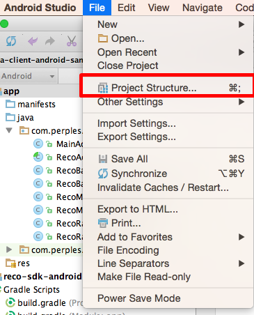
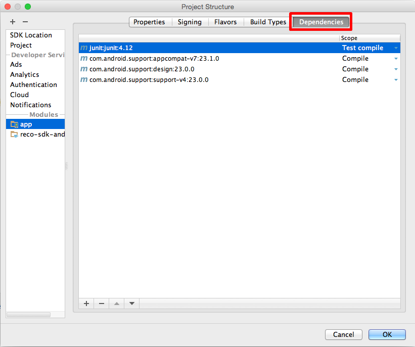
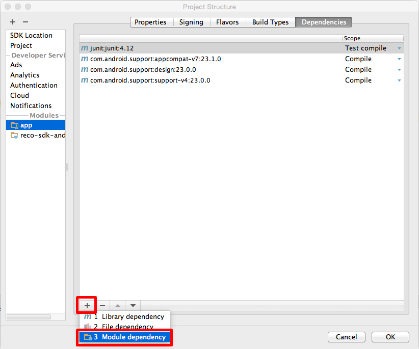
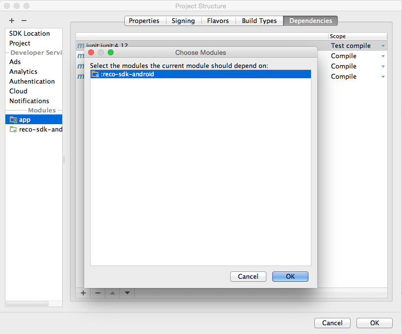

이 문서는 Perples Inc.의 Android용 RECO SDK 사용을 돕고자 작성되었습니다.
RECO SDK는 다음을 포함하고 있습니다.
document/
api/ // API 문서
guide/ // 사용 가이드 문서
sample/ // 샘플 프로젝트
sdk/ // RECO 라이브러리 (reco-sdk-android_[VERSION_NUMBER].aar)
참고
본 설명은 Android Studio 2.1.1을 기준으로 작성되었습니다.
안드로이드용 RECO SDK를 사용하기 위한 요구사항입니다.
RECO SDK를 사용하기 위한 권장 API version 은 다음과 같습니다. 타겟 API version 이나 컴파일 API version 은 최소 API version 이상을 사용하셔도 상관 없습니다.
또한, 최소 API version을 더 낮게 설정할 경우, SDK 적용 시 Android API 18 이상일 경우에만 작동할 수 있도록 추가 설정을 권장 합니다.
- 최소 API 18: Android 4.3 (Jelly Bean)
- 타겟 API: Android 4.3 (Jelly Bean, API 18) 이상의 안드로이드 버전
- 컴파일 API: Android 4.3 (Jelly Bean, APPI 18) 이상의 안드로이드 버전
RECO는 아래와 같이 BLUETOOTH ADMIN 과 BLUETOOTH 권한을 필요로 합니다.
<uses-permission android:name="android.permission.BLUETOOTH" />
<uses-permission android:name="android.permission.BLUETOOTH_ADMIN" />
참고
BLUETOOTH_ADMIN 권한은 블루투스 기기를 검색하기 위해 필요합니다.
BLUETOOTH_ADMIN 권한을 사용하기 위해서는 BLUETOOTH 권한이 필요합니다.
또한, 안드로이드 API 23 (마시멜로우, Marshmallow) 이상에서는 다음과 같이 위치 권한이 필요 합니다.
<uses-permission android:name="android.permission.ACCESS_COARSE_LOCATION" />
<uses-permission android:name="android.permission.ACCESS_FINE_LOCATION" />
참고
위치 권한은 ACCESS_COARSE_LOCATION 혹은 ACCESS_FINE_LOCATION 중 1개 권한이 필요합니다.
이미 ACCESS_COARSE_LOCATION 혹은 ACCESS_FINE_LOCATION 권한을 선언한 경우, 추가적으로 선언하실 필요가 없습니다.
또한, RECO SDK를 사용하기 위해서 <application> </application> 사이에 아래와 같이 RECOBeaconService를 정의 해야 합니다.
<service android:name="com.perples.recosdk.RECOBeaconService" />
만약 BLE(Bluetooth Low Energy)를 지원하는 기기만을 지원하기 위해서는 아래와 같은 특성을 정의합니다.
<uses-feature android:name="android.hardware.bluetooth_le" android:required="true" />
참고
BLE를 지원하지 않는 기기에서도 RECO SDK를 사용하기 위해서는 위 특성을 required=”false”로 선언합니다.
RECO SDK를 사용하여 BLE를 지원하는 단말인지 여부를 아래와 같은 메소드를 이용하여 확인할 수 있습니다.
RECOBeaconManager recoManager = RECOBeaconManager.getInstance(context);
if(recoManager.isMonitoringAvailable()) {
//BLE를 지원하는 단말의 경우 region monitoring을 시작할 수 있습니다.
}
if(recoManager.isRangingAvailable()) {
//BLE를 지원하는 단말의 경우 region ranging을 시작할 수 있습니다.
}
참고
본 설명은 Android Studio 2.1.1를 기준으로 작성되었습니다.
reco-sdk-android_[VERSION_NUMBER].aar
1-1. 아래 그림과 같이 Android Studio에서 File > New > New Module... 을 클릭합니다.
1-2. New Module 선택 시, “Import .JAR/.AAR Package” 를 선택합니다.
1-3. 붉은색 상자 안의 버튼을 클릭하여 RECO SDK 라이브러리를 선택 후, Subproject name을 지정합니다.
Subproject name은 프로젝트 내에서 구별을 위해 사용합니다. (예: reco-sdk-android)
2-1. File > Project Structure... 를 클릭합니다.

2-2. “Dependencies” 탭을 선택합니다.

2-3. 하단의 “+” 버튼을 눌러 “Module dependency”를 선택합니다.

2-4. 앞서 1-3에서 설정한 Subproject name을 선택합니다. (예: :reco-sdk-android)

<uses-permission android:name="android.permission.BLUETOOTH" />
<uses-permission android:name="android.permission.BLUETOOTH_ADMIN" />
<uses-permission android:name="android.permission.ACCESS_COARSE_LOCATION" />
<uses-permission android:name="android.permission.ACCESS_FINE_LOCATION" />
<uses-feature android:name="android.hardware.bluetooth_le" android:required="true" />
<application>
<service android:name="com.perples.recosdk.RECOBeaconService" />
</application>
참고
참고
import com.perples.recosdk.RECOBeaconManager;
import com.perples.recosdk.RECOServiceConnectListener;
public class YourClassName implements RECOServiceConnectListener {
..
..
..
public void onServiceConnect() {
//RECOBeaconService와 연결 시 코드 작성
}
public void onServiceFail(RECOErrorCode errorCode) {
//RECOBeaconService와 연결 되지 않았을 시 코드 작성
}
}
//RECOBeaconManager.getInstance(Context, boolean, boolean)의 경우,
//Context, RECO 비콘만을 대상으로 동작 여부를 설정하는 값, 그리고 백그라운드 monitoring 중 ranging 시 timeout을 설정하는 값을 매개변수로 받습니다.
boolean mScanRecoOnly = true;
boolean mEnableBackgroundTimeout = true;
..
..
..
RECOBeaconManager recoManager = RECOBeaconManager.getInstance(this, mScanRecoOnly, mEnableBackgroundTimeout);
참고
recoManager.bind(this);
참고
bind(RECOServiceConnectListener) 메소드 호출 후, RECOBeaconService와 연결되면 RECOServiceConnectListener 클래스의 onServiceConnect() 콜백 메소드가 호출 됩니다.
recoManager.unbind();
상세한 구현 예시는 예제 프로젝트를 참고하시기 바랍니다.
Region Monitoring 이란 region에 대해 출입을 감지하는 기능입니다. 사용자가 정의한 Region에 대해 monitoring을 시작할 경우, region에 대한 상태(inside, outside, unknown) 및 입장과 퇴장을 감지할 수 있습니다.
참고
import com.perples.recosdk.RECOBeaconRegion;
import com.perples.recosdk.RECOBeaconRegionState;
import com.perples.recosdk.RECOMonitoringListener;
public class YourClassName implements RECOMonitoringListener {
..
..
..
public void didDetermineStateForRegion(RECOBeaconRegionState recoRegionState,
RECOBeaconRegion recoRegion) {
//monitoring 시작 후에 monitoring 중인 region에 들어가거나 나올 경우
//(region 의 상태에 변화가 생긴 경우) 이 callback 메소드가 호출됩니다.
//didEnterRegion, didExitRegion callback 메소드와 함께 호출됩니다.
//region 상태 변화시 코드 작성
}
public void didEnterRegion(RECOBeaconRegion recoRegion, Collection<RECOBeacon> beacons) {
//monitoring 시작 후에 monitoring 중인 region에 들어갈 경우 이 callback 메소드가 호출됩니다.
// 0.2 버전부터 이 callback 메소드가 호출 될 경우, recoRegion에서 감지된 비콘들을 전달합니다.
//region 입장시 코드 작성
}
public void didExitRegion(RECOBeaconRegion recoRegion) {
//monitoring 시작 후에 monitoring 중인 region에서 나올 경우 이 callback 메소드가 호출됩니다.
//region 퇴장시 코드 작성
}
public void didStartMonitoringForRegion(RECOBeaconRegion recoRegion) {
//monitoring 시작 후에 monitoring을 시작하고 이 callback 메소드가 호출됩니다.
//monitoring 정상 실행 시 코드 작성
}
public void monitoringDidFailForRegion(RECOBeaconRegion recoRegion, RECOErrorCode errorCode) {
//monitoring이 정상적으로 시작하지 못했을 경우 이 callback 메소드가 호출됩니다.
//RECOErrorCode는 "Error Code" 를 확인하시기 바랍니다.
//monitoring 실패 시 코드 작성
}
}
recoManager.setMonitoringListener(this);
//scan 시간을 설정할 수 있습니다. 기본 값은 1초 입니다.
recoManager.setScanPeriod(TIME_IN_MILLISECOND);
//scan 후, 다음 scan 시작 전까지의 시간을 설정할 수 있습니다. 기본 값은 10초 입니다.
recoManager.setSleepPeriod(TIME_IN_MILLISECOND);
ArrayList<RECOBeaconRegion> monitoringRegions = new ArrayList<RECOBeaconRegion>();
monitoringRegions.add(new RECOBeaconRegion(YOUR_REGION_UUID, YOU_REGION_UNIQUE_IDENTIFIER));
monitoringRegions.add(new RECOBeaconRegion(YOUR_REGION_UUID, YOUR_REGION_MAJOR,
YOU_REGION_UNIQUE_IDENTIFIER));
for(RECOBeaconRegion region : monitoringRegions) {
try {
//region의 expiration 시간을 설정할 수 있습니다. 기본 값은 60초(1분) 입니다.
region.setRegionExpirationTimeMillis(TIME_IN_MILLISECOND);
recoManager.startMonitoringForRegion(region);
} catch (RemoteException e) {
//RemoteException 발생 시 작성 코드
} catch (NullPointerException e) {
//NullPointerException 발생 시 작성 코드
}
}
경고
for(RECOBeaconRegion region : monitoringRegions) {
try {
recoManager.stopMonitoringForRegion(region);
} catch (RemoteException e) {
//RemoteException 발생 시 작성 코드
} catch (NullPointerException e) {
//NullPointerException 발생 시 작성 코드
}
}
상세한 구현 예시는 예제 프로젝트를 참고하시기 바랍니다.
Region Ranging이란 region에서 감지되는 비콘들의 정보를 열람하는 기능입니다. 사용자가 정의한 region에 대해 ranging을 시작할 경우, 해당 region에 속하는 비콘들의 리스트를 전달 받아 각 비콘의 정보를 열람할 수 있습니다.
참고
import com.perples.recosdk.RECOBeaconRegion;
import com.perples.recosdk.RECOBeaconRegionState;
import com.perples.recosdk.RECORangingListener;
public class YourClassName implements RECORangingListener {
..
..
..
public void didRangeBeaconsInRegion(Collection<RECOBeacon> recoBeacons,
RECOBeaconRegion recoRegion) {
//ranging 중인 region에서 1초 간격으로 감지된
//RECOBeacon들 리스트와 함께 이 callback 메소드를 호출합니다.
//recoRegion에서 감지된 RECOBeacon 리스트 수신 시 작성 코드
}
public void rangingBeaconsDidFailForRegion(RECOBeaconRegion recoRegion, RECOErrorCode errorCode) {
//ranging을 정상적으로 시작하지 못했을 경우 이 callback 메소드가 호출됩니다.
//RECOErrorCode는 "Error Code"를 확인하시기 바랍니다.
//ranging 실패 시 코드 작성
}
}
recoManager.setRangingListener(this);
ArrayList<RECOBeaconRegion> rangingRegions = new ArrayList<RECOBeaconRegion>();
rangingRegions.add(new RECOBeaconRegion(YOUR_REGION_UUID, YOU_REGION_UNIQUE_IDENTIFIER));
rangingRegions.add(new RECOBeaconRegion(YOUR_REGION_UUID, YOUR_REGION_MAJOR,
YOU_REGION_UNIQUE_IDENTIFIER));
for(RECOBeaconRegion region : rangingRegions) {
try {
recoManager.startRangingBeaconsInRegion(region);
} catch (RemoteException e) {
//RemoteException 발생 시 작성 코드
} catch (NullPointerException e) {
//NullPointerException 발생 시 작성 코드
}
}
경고
for(RECOBeaconRegion region : rangingRegions) {
try {
recoManager.stopRangingBeaconsInRegion(region);
} catch (RemoteException e) {
//RemoteException 발생 시 작성 코드
} catch (NullPointerException e) {
//NullPointerException 발생 시 작성 코드
}
}
상세한 구현 예시는 예제 프로젝트를 참고하시기 바랍니다.
참고
경고
requestStateForRegion 메소드는 비동기식으로 처리되며, 결과는 didDetermineStateForRegion(RECOBeaconRegionState, RECOBeaconRegion) callback 메소드를 통해 전달합니다.
import com.perples.recosdk.RECOBeaconRegion;
import com.perples.recosdk.RECOBeaconRegionState;
import com.perples.recosdk.RECOMonitoringListener;
public class YourClassName implements RECOMonitoringListener {
..
..
..
public void didDetermineStateForRegion(RECOBeaconRegionState recoRegionState,
RECOBeaconRegion recoRegion) {
//monitoring 시작 후에 monitoring 중인 region에 들어가거나 나올 경우
//(region 의 상태에 변화가 생긴 경우) 이 callback 메소드가 호출됩니다.
//didEnterRegion, didExitRegion callback 메소드와 함께 호출됩니다.
//region 상태 변화시 코드 작성
}
public void didEnterRegion(RECOBeaconRegion recoRegion, Collection<RECOBeacon> beacons) {
//monitoring 시작 후에 monitoring 중인 region에 들어갈 경우 이 callback 메소드가 호출됩니다.
// 0.2 버전부터 이 callback 메소드가 호출 될 경우, recoRegion에서 감지된 비콘들을 전달합니다.
//region 입장시 코드 작성
}
public void didExitRegion(RECOBeaconRegion recoRegion) {
//monitoring 시작 후에 monitoring 중인 region에서 나올 경우 이 callback 메소드가 호출됩니다.
//region 퇴장시 코드 작성
}
public void didStartMonitoringForRegion(RECOBeaconRegion recoRegion) {
//monitoring 시작 후에 monitoring을 시작하고 이 callback 메소드가 호출됩니다.
//monitoring 정상 실행 시 코드 작성
}
public void monitoringDidFailForRegion(RECOBeaconRegion recoRegion, RECOErrorCode errorCode) {
//monitoring이 정상적으로 시작하지 못했을 경우 이 callback 메소드가 호출됩니다.
//RECOErrorCode는 "Error Code" 를 확인하시기 바랍니다.
//monitoring 실패 시 코드 작성
}
}
경고
RECOBeaconRegion region = new RECOBeaconRegion(YOUR_REGION_UUID, YOU_REGION_UNIQUE_IDENTIFIER);
recoManager.setMonitoringListener(this);
recoManager.startMonitoringForRegion(region);
recoManager.requestStateForRegion(region);
상세한 구현 예시는 예제 프로젝트를 참고하시기 바랍니다.
RECOBeaconRegion은 BLE Beacon이 내보내는 신호에 기반하여 정의합니다. 즉, RECOBeaconRegion이란 BLE Beacon의 Proximity UUID, Major, Minor 세가지 값을 통해 만들어지는 영역입니다.
특정 지역을 구분하기 위해, proximity UUID는 대분류, major는 중분류, minor는 소분류로 영역을 세분화하는 것을 권장합니다.
예를 들면 다음과 같습니다.
| 매장 위치 | 명 동 | 강 남 | 이 태 원 | |
|---|---|---|---|---|
| Proximity UUID | 24DDF411-8CF1-440C-87CD-E368DAF9C93E | |||
| Major | 1001 | 1002 | 1003 | |
| Minor | 의류 | 100 | 100 | 100 |
| 신발 | 200 | 200 | 200 | |
| 잡화 | 300 | 300 | 300 | |
위 예시에서 영역은 다음과 같이 설정할 수 있습니다.
Proximity UUID만으로 영역을 설정할 경우, 전 매장을 하나의 영역으로 만들 수 있습니다. 즉, 설정한 proximity UUID를 포함한 비콘 신호를 감지합니다. 예시의 proximity UUID만으로 설정된 region은 전 매장의 출입과 전 매장의 비콘 정보를 monitoring 및 ranging을 통해 확인할 수 있습니다.
Proximity UUID 만으로 구성하는 영역은 다음과 같이 RECOBeaconRegion 클래스를 통해 설정합니다.
String mProximityUuid = "24DDF411-8CF1-440C-87CD-E368DAF9C93E";
String mIdentifier = "ALL Stores";
RECOBeaconRegion mRecoRegion = new RECOBeaconRegion(mProximityUuid, mIdentifier);
Proximity UUID와 Major를 통해 영역을 설정할 경우, 각 매장을 하나의 영역으로 만들 수 있습니다. 설정한 proximity UUID와 major 값을 포함한 비콘 신호를 감지합니다. 예시의 proximity UUID와 major 값으로 설정된 region은 각 매장의 출입과 각 매장의 비콘 정보를 monitoring 및 ranging을 통해 확인할 수 있습니다.
Proximity UUID, major 값을 통해 영역을 설정하는 방법은 다음과 같습니다.
String mProximityUuid = "24DDF411-8CF1-440C-87CD-E368DAF9C93E";
int mMajor1 = 1001;
int mMajor2 = 1002;
int mMajor3 = 1003;
RECOBeaconRegion mRecoRegion1 = new RECOBeaconRegion(mProximityUuid, mMajor1, "명동점");
RECOBeaconRegion mRecoRegion2 = new RECOBeaconRegion(mProximityUuid, mMajor2, "강남점");
RECOBeaconRegion mRecoRegion3 = new RECOBeaconRegion(mProximityUuid, mMajor3, "이태원점");
Proximity UUID, major, 그리고 minor를 통해 영역을 설정할 경우, 각 매장 내 특정 코너에 대해 영역을 만들 수 있습니다. 설정한 proximity UUID, major, minor 값을 포함하는 특정 비콘의 신호를 감자합니다. 예시의 proximity UUID와 major, minor 값으로 설정된 region은 각 매장 내 특정 코너에 대한 출입과 비콘 정보를 monitoring 및 ranging을 통해 확인할 수 있습니다.
Proximity UUID, major, minor 값을 통해 영역을 설정하는 방법은 다음과 같습니다.
String mProximityUuid = "24DDF411-8CF1-440C-87CD-E368DAF9C93E";
int mMajor1 = 1001;
int mMajor2 = 1002;
int mMajor3 = 1003;
int mMinor1 = 100;
int mMinor2 = 200;
int mMinor3 = 300;
RECOBeaconRegion mRecoRegion1 = new RECOBeaconRegion(mProximityUuid, mMajor1, mMinor1, "명동점 의류 코너");
RECOBeaconRegion mRecoRegion2 = new RECOBeaconRegion(mProximityUuid, mMajor2, mMinor1, "강남점 의류 코너");
RECOBeaconRegion mRecoRegion3 = new RECOBeaconRegion(mProximityUuid, mMajor3, mMinor1, "이태원점 의류 코너");
RECOBeaconRegion mRecoRegion4 = new RECOBeaconRegion(mProximityUuid, mMajor1, mMinor2, "명동점 신발 코너");
RECOBeaconRegion mRecoRegion5 = new RECOBeaconRegion(mProximityUuid, mMajor2, mMinor3, "강남점 잡화 코너");
RECOBeaconRegion mRecoRegion6 = new RECOBeaconRegion(mProximityUuid, mMajor3, mMinor2, "이태원점 신발 코너");
경고
Major값 만으로, 또는 minor 값 만으로는 영역을 설정할 수 없습니다. 즉, major 값을 포함하고 싶으신 경우 반드시 proximity UUID를, minor 값을 포함하고 싶으신 경우 반드시 proximity UUID 및 major 값을 설정해주셔야 합니다.
참고
경고
scan 시간이 길수록, sleep 시간이 짧을 수록, 그리고 주변에 비콘이 많을 수록 백그라운드에서 배터리 소모는 증가합니다.
하지만, 백그라운드에서 Monitoring 시, 입장 혹은 퇴장 이벤트가 발생했을 경우, 주변의 비콘을 스캔할 수 있도록 도와줄 수 있습니다. 이 부분에 대한 상세한 구현 예시는 예제 프로젝트의 RECOBackgroundRangingService.java 파일을 참고하시기 바랍니다.
경고
Ranging의 경우, 주변의 비콘을 계속 스캔하는 기능입니다. 배터리를 많이 소모할 수 있는 작업이기때문에, 가급적이면 백그라운드에서 사용을 하지 않는 것이 좋습니다. 따라서, monitoring 중 ranging을 할 경우, 별도의 ranging 중단 요청이 없을 시 10초 후 ranging을 중단 합니다. 백그라운드 monitoring 중 ranging timeout을 설정하지 않으려면, RECOBeaconManager 인스턴스 생성 시, false로 설정하시면 됩니다.
//백그라운드 monitoring 중 ranging 시, timeout을 원하지 않을 경우 아래와 같이 인스턴스를 생성
//주의사항: 배터리 소모율이 늘어남
RECOBeaconManager recoManager = RECOBeaconManager.getInstance(this, false);
일부 안드로이드 기기에서 BLE 장치들을 스캔할 때, 한 번만 스캔 후 스캔하지 않는 버그(참고: http://code.google.com/p/android/issues/detail?id=65863)가 있습니다. 해당 버그를 SDK에서 해결하기 위해, RECOBeaconManager에 setDiscontinuousScan() 메소드를 이용할 수 있습니다. 해당 메소드는 기기에서 BLE 장치들을 스캔할 때(즉, ranging 시에), 연속적으로 계속 스캔할 것인지, 불연속적으로 스캔할 것인지 설정하는 것입니다. 기본 값은 FALSE로 설정되어 있으며, 특정 장치에 대해 TRUE로 설정하시길 권장합니다.
경고
TRUE로 설정 시, ranging 시 발생하는 didRangeBeaconsInRegion() 콜백 메소드가 1초 간격으로 호출되지 않을 수 있습니다.
Monitoring 및 ranging 시에 발생하는 exception은 다음과 같습니다.
Error Code는 다음과 같습니다.
| Error Code | 설명 |
|---|---|
| RECO_MANAGER_NOT_BIND | RECOBeaconManager와 RECOBeaconService가 연결되지 않았을 경우입니다. RECOBeaconManager의 bind(RECOServiceConnectListener serviceConnectListener) 메소드를 통해 연결을 먼저 해주시기 바랍니다. |
| RECO_NULL_REGION | 매개변수로 전달되는 RECOBeaconRegion 객체가 NULL일 경우입니다. RECOBeaconRegion을 생성 후 매개변수로 전달하시기 바랍니다. |
| RECO_NULL_MONITORING_LISTENER | Monitoring 시 콜백 메소드를 전달받을 RECOMonitoringListener 가 설정되지 않았을 경우입니다. RECOBeaconManager의 setMonitoringListener(RECOMonitoringListener listener) 메소드를 통해 RECOMonitoringListener를 설정하시기 바랍니다. |
| RECO_NULL_RANGING_LISTENER | Ranging 시 콜백 메소드를 전달받을 RECORangingListener가 설정되지 않았을 경우입니다. RECOBeaconManager의 setRangingListener(RECORangingListener listener) 메소드를 통해 RECORangingListener를 설정하시기 바랍니다. |
| RECO_LOCATION_PERMISSION_NOT_GRANTED | 위치 권한이 부여되지 않았습니다. 안드로이드 API 23 (마시멜로우) 이상의 버전에서 RECO SDK가 정상적으로 동작하지 않을 수 있습니다. ACCESS_COARSE_LOCATION 혹은 ACCESS_FINE_LOCATION 중 하나 이상의 권한이 필요합니다. |
This RECO Beacon Software Development Kit Agreement (“Agreement”) is between the individual or entity (“you” or “Developer”) that accepts it, and Perples, Inc. (“Perples”). You accept this Agreement by clicking an “agree” or similar button, where this option is provided by Perples, or if you use or access the Software Development Kit (“SDK”) or any part of the SDK. Your agreement to these terms also binds your authorized users, your company or organization. If you do not agree to the terms of this Agreement, do not accept it. Before accepting this Agreement, please carefully read it. Capitalized terms used but not defined in the body of this Agreement have the meaning given them in the “Definitions” exhibit.
Last updated: May 26, 2015
Development License
1.1. Development License. Conditioned upon compliance with the terms and conditions of this Agreement, Perples hereby grants you a limited, non-exclusive, personal, revocable, non-sublicensable and non-transferable license to: (a) install and use a reasonable number of copies of the SDK on computers owned or controlled by you for the purpose of developing and testing applications that are intended for use solely in connection with a RECO Beacon Device; and (b) modify and incorporate into your Application any sample code provided in the SDK.
1.2. Restrictions. The license granted to you in Section 1.1 is subject to the following restrictions, as well as others listed in this Agreement:
1.2.1. Except as expressly permitted in Section 1.1: (a) you may not publish, distribute or copy the SDK, and (b) you may not modify or create derivative works of the SDK.
1.2.2. You may use the SDK solely in connection with a RECO Beacon Device.
1.2.3. You may not, and may not enable others to, reverse engineer, decompile, disassemble or otherwise attempt to reconstruct, identify or discover any source code, underlying ideas, techniques, or algorithms in the SDK, the RECO Beacon Device or any software that forms part of the SDK, nor attempt to circumvent any related security measures (except as and only to the extent any foregoing restriction is prohibited by applicable law or permitted by applicable law notwithstanding the foregoing restriction, or to the extent as may be permitted by licensing terms governing use of any open source software components or sample code included within the SDK).
1.2.4. You may not remove, obscure, or alter any proprietary rights or confidentiality notices within the SDK or any software, documentation or other materials in it or supplied with it.
1.2.5. You may not create Applications or other software that prevent or degrade the interaction of Applications developed by others with the Software.
1.3. Updates. The terms of this Agreement will apply to any Updates that Perples makes available to you. You agree that Updates may require you to change or update your Application, and may affect your ability to use, access or interact with the SDK.
1.4. Trademarks. You may indicate that your Application is “for RECO Beacon” or “RECO Beacon-enabled”. However, unless provided in an agreement between you and Perples, you may not otherwise use “RECO Beacon”, “RECO”, or any other trademark of the RECO Beacon by Perples in connection with your Application or company, or in any URL, product, service, name field or logos created by you.
2.1. Distribution License. Conditioned upon compliance with the terms and conditions of this Agreement, Perples hereby grants you a limited, non-exclusive, personal, revocable, non-transferable license under Perples’s applicable intellectual property rights to the extent necessary to: (a) copy and distribute (or have copied and distributed) the RECO Beacon Redistributables, solely as compiled with, incorporated into, or packaged with, your Application; and (b) to make (but not have made), use, sell, offer for sale and import your Application.
2.2. Restrictions. The license granted to you in Section 2.1 is subject to the following restrictions, as well as others listed in this Agreement:
2.2.2. You may not, directly or indirectly, publish, post or otherwise make available the RECO Beacon Redistributables other than as compiled with, incorporated into, or packaged with, your Application.
Sample code made publicly available by Perples on its developer web site is provided subject to the MIT license, unless otherwise noted in the license, notice or readme files distributed with the example or in related documentation. The SDK may otherwise include software or other materials that are provided under a separate license agreement, and that separate license will govern the use of such software or other materials in the event of a conflict with this Agreement. Any such separate license agreement may be indicated in the license, notice, or readme files distributed with the applicable software or other materials or in related documentation.
4.1. Notwithstanding anything in this Agreement, you are not licensed to, and you agree not to, use, copy, sell, offer for sale, or distribute the SDK or RECO Beacon Devices (whether compiled with, incorporated into, or packaged with your Application or otherwise), for or in connection with uses where failure or fault of the RECO Beacon Device, RECO Beacon Redistributables or your Application could lead to death or serious bodily injury of any person, or to severe physical or environmental damage (“High Risk Use”). ANY SUCH USE IS STRICTLY PROHIBITED.
4.2. You acknowledge the SDK may allow you to develop Applications that enable the control of motorized or mechanical equipment, or other systems, machines or devices. If you elect to use the SDK in such a way, you must take steps to design and test your Applications to ensure that your Applications do not present risks of personal injury or death, property damage, or other losses. The RECO Beacon Device, the RECO Beacon Redistributables and other software in the SDK may not always function as intended. You must design your Applications so that any failure of a RECO Beacon Device, a RECO Beacon Redistributable and/or such other software does not cause personal injury or death, property damage, or other losses. If you choose to use the SDK, (i) you assume all risk that use of the RECO Beacon Device and/or such other software by you or by any others causes any harm or loss, including to the end users of your Applications or to third parties, (ii) you hereby waive, on behalf of yourself and your Authorized Users, all claims against Perples and its affiliates related to such use, harm or loss (including, but not limited to, any claim that a RECO Beacon Device, a RECO Beacon Redistributable or such other software is defective), and (iii) you agree to hold Perples and its affiliates harmless from such claims.
5.1. Beta Software etc. Obligations. You acknowledge and agree that Perples may share alpha or beta software or hardware with you that it identifies as non-public. If so, you agree not to disclose such software or hardware to others without the prior written consent of Perples until the time, if any, it is made public by Perples, and to use such software or hardware only for the purposes expressly permitted by this Agreement.
6.1. Ownership. Perples agrees that it obtains no right, title or interest from you (or your licensors) under this Agreement in or to any of your Applications, including any intellectual property rights which subsist in those Applications. As between Perples and you, Perples owns all right, title and interest, including all intellectual property rights, in and to the SDK and the RECO Beacon Redistributables, other than any third party software or materials incorporated in the SDK, and you agree not to contest Perples’s ownership of any of the foregoing.
6.2. Feedback. You may (but are not required to) provide feedback, comments and suggestions (collectively, “Feedback”) to Perples. You hereby grant to Perples a non-exclusive, perpetual, irrevocable, paid-up, transferable, sub-licensable, worldwide license under all intellectual property rights covering such Feedback to use, disclose and exploit all such Feedback for any purpose.
In addition to your other obligations under this Agreement, you warrant and agree that:
7.1. You will use the SDK only in accordance with all accompanying documentation, in the manner expressly permitted by this Agreement, and your use of the SDK, and the marketing, sales and distribution of your Application, will be in compliance with all applicable laws and regulations and all Republic of Korea and local or foreign export and re-export restrictions applicable to the technology and documentation provided under this Agreement (including privacy and data security laws and regulations), and you will not develop any Application which would commit or facilitate the commission of a crime, or other tortious, unlawful, or illegal act.
We reserve the right to change this Agreement, the SDK or the Perples development and licensing program at any time in our discretion. Perples may require that you either accept and agree to the new terms of this Agreement, or, if you do not agree to the new terms, cease or terminate your use of the SDK. Your continued use of the SDK after changes to this Agreement take effect will constitute your acceptance of the changes. If you do not agree to a change, you must stop using the SDK and terminate this Agreement. Any termination of this Agreement by you under this Section 8 (and only this Section 8) will not affect your right, subject to your continued compliance with your obligations under this Agreement, to continue to distribute versions of your Application created and first distributed before termination, and will not affect the right of your End Users to continue using such versions of your Application, both of which rights will survive termination.
9.1. Term. This Agreement will continue to apply until terminated by either you or Perples as set out below.
9.2. Termination by You. If you want to terminate this Agreement, you may terminate it by uninstalling and destroying all copies of the SDK that are in the possession, custody or control of you, your Authorized Users and your organization.
9.3. Termination by Perples. Perples may at any time, terminate this Agreement with you for any reason or for no reason in Perples’s sole discretion, including as a result of non-compliance by you with the restrictions in Section 1.2 or Section 2.2, or for other reasons.
9.4. Effect of Termination. Upon termination of this Agreement, all rights granted to you under this Agreement will immediately terminate and you must immediately cease all use and destroy all copies of the SDK in your and your Authorized Users’ possession, custody or control, and, except as specifically set out in Section 8, cease your distribution of Applications. Sections 1.2, 2.2, 5.1, 6, 9.4, and 10 - 13, and the Definitions exhibit, will survive termination of this Agreement. Termination of this Agreement will not affect the right of your End Users who have downloaded your Application prior to termination to continue using it.
You agree to indemnify, hold harmless and, at Perples’s option, defend Perples and its affiliates and their respective officers, directors, employees, agents, and representatives harmless from any and all judgments, awards, settlements, liabilities, damages, costs, penalties, fines and other expenses (including court costs and reasonable attorneys’ fees) incurred by them arising out of or relating to any third party claim (a) with respect to your Application, including products liability, privacy, or intellectual property infringement claims, or (b) based upon your negligence or willful misconduct or any breach or alleged breach of your representations, warranties, and covenants under this Agreement. In no event may you enter into any settlement or like agreement with a third party that affects Perples rights or binds Perples in any way, without the prior written consent of Perples.
THE SDK AND THE RECO BEACON REDISTRIBUTABLES ARE PROVIDED “AS IS” WITHOUT WARRANTY OF ANY KIND. PERPLES, ON BEHALF OF ITSELF AND ITS SUPPLIERS, HEREBY DISCLAIMS ALL REPRESENTATIONS, PROMISES, OR WARRANTIES, WHETHER EXPRESS, IMPLIED, STATUTORY, OR OTHERWISE, WITH RESPECT TO THE SDK AND THE RECO BEACON REDISTRIBUTABLES, INCLUDING THEIR CONDITION, AVAILABILITY, OR THE EXISTENCE OF ANY LATENT DEFECTS, AND PERPLES SPECIFICALLY DISCLAIMS ALL IMPLIED WARRANTIES OF MERCHANTABILITY, TITLE, NONINFRINGEMENT, SUITABILITY, AND FITNESS FOR ANY PURPOSE. PERPLES DOES NOT WARRANT THAT THE SDK OR THE RECO BEACON REDISTRIBUTABLES WILL BE ERROR-FREE OR THAT THEY WILL WORK WITHOUT INTERRUPTION.
THE SOFTWARE IS PROVIDED “AS IS”, WITHOUT WARRANTY OF ANY KIND, EXPRESS OR IMPLIED, INCLUDING BUT NOT LIMITED TO THE WARRANTIES OF MERCHANTABILITY, FITNESS FOR A PARTICULAR PURPOSE AND NONINFRINGEMENT. IN NO EVENT SHALL THE AUTHORS OR COPYRIGHT HOLDERS BE LIABLE FOR ANY CLAIM, DAMAGES OR OTHER LIABILITY, WHETHER IN AN ACTION OF CONTRACT, TORT OR OTHERWISE, ARISING FROM, OUT OF OR IN CONNECTION WITH THE SOFTWARE OR THE USE OR OTHER DEALINGS IN THE SOFTWARE. MOREOVER, PERPLES SHALL NEVER BE LIABLE FOR ANY DEFECT IN SOURCE CODE WRITTEN BY YOU WHEN RELYING ON THE SDK.
13.1. Assignment. You may not assign this Agreement without the prior written consent of Perples. Any assignment without such consent is void and of no effect. Perples may assign this Agreement without your consent in connection with (a) a merger or consolidation of Perples, (b) a sale or assignment of substantially all its assets, or (c) any other transaction which results in another entity or person owning substantially all of the assets of Perples. In the event of a permitted assignment, this Agreement will inure to the benefit of and be binding upon the parties and their respective successors and permitted assigns.
13.2. Waiver; Severability. The failure of the other party to enforce any rights under this Agreement will not be deemed a waiver of any rights. The rights and remedies of the parties in this Agreement are not exclusive and are in addition to any other rights and remedies provided by law. If any provision of this Agreement is held by a court of competent jurisdiction to be contrary to law, the remaining provisions of this Agreement will remain in full force and effect.
13.3. Reservation. All licenses not expressly granted in this Agreement are reserved and no other licenses, immunity or rights, express or implied, are granted by Perples, by implication, estoppel, or otherwise. The software in the SDK is licensed, not sold.
13.4. Export Restrictions. The software is subject to Republic of Korea export laws and regulations. You must comply with all domestic and international export laws and regulations that apply to the software. These laws include restrictions on destinations, end users, and end use.
13.5. Relationship of the Parties. This Agreement does not create any agency, partnership, or joint venture relationship between Perples and you. This Agreement is for the sole benefit of Perples and you (and indemnified parties), and no other persons will have any right or remedy under this Agreement.
13.6. Notice. The address for notice to Perples under this Agreement is:
Perples, Inc. 8F, 209 Dosan-daero, Gangnam-gu, Seoul, South Korea
13.7. Entire Agreement. This Agreement is the entire understanding of the parties with respect to its subject matter and supersedes any previous or contemporaneous communications, whether oral or written with respect to such subject matter.
Definitions
Whenever capitalized in this Agreement:
“Authorized Users” means your employees and contractors, members of your organization or, if you are an educational institution, your faculty, staff and registered students, who (a) have a demonstrable need to know or use the SDK in order to develop and test Applications on your behalf and (b) each have written and binding agreements with you to protect against the unauthorized use and disclosure of the SDK consistent with the terms and conditions of this Agreement. Authorized Users do not include End Users.about:blank
“End User” means your end user customer(s) or licensee(s).
“Perples” “we” or “us” means Perples, Inc. with a principal place of business at 8F, 209 Dosan-daero, Gangnam-gu, Seoul, South Korea.
“RECO Beacon Device” means the RECO Beacon, a bluetooth low energy beacon device that sends out Bluetooth signals in regular intervals.
“RECO Beacon Redistributables” means any .jar files, .so files, .framework files, or other materials we specifically designate in the SDK excluding the sample code as made available for incorporation into or distribution with Applications.
“SDK” means, collectively, the RECO Beacon Redistributables, tools, APIs, software, documentation, other materials and any updates to the foregoing that may be provided or made available to you by Perples in connection with this Agreement, via the RECO Member Center or otherwise for use in connection with the Perples development program to develop Applications.
“Updates” means updates, upgrades, modifications, enhancements, revisions, new releases or new versions to the SDK that Perples may make available to you in connection with this Agreement.
“RECO Member Center” means the developer portal (http://member.reco2.me) provided by Perples.
Other capitalized terms used in this Agreement have the meaning given them elsewhere in this Agreement.
{kind=link}
{kind=link}
{kind=link}
{kind=link}